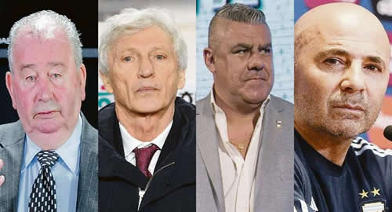

Real Chubut - Agencia de Noticias


¿En qué momento se jodió el fútbol argentino?

El Premio Nobel de Literatura Mario Vargas Llosa regaló en Conversación en la Catedral (1969) uno de los mejores arranques de una obra latinoamericana. El protagonista de la novela, Santiago Zavala, periodista del diario limeño La Crónica, un alter ego de un muy joven Vargas Llosa, hace todo un trabajo intelectual para identificar un momento exacto donde en "Mi Perú" (según su propia definición) las cosas comenzaron a funcionar mal hasta llevar a ese país al desastre. Lo importante del legado del escritor es que con esta pregunta inaugura el "dilema vargasllosiano", que luego muchas disciplinas utilizan para identificar el momento en que un sector, una economía, una sociedad o todo un Estado caen en una crisis terminal. La metáfora de Vargas Llosa deriva en una tesis que define que al llegar al fondo de una crisis, y luego de identificar el momento en que esa caída comenzó, se pueden determinar los eslabones que escenifican la cuesta abajo y, finalmente, llegar al fondo del pozo y comenzar la reconstrucción.
No es tema de estas columnas analizar cuestiones meramente deportivas. Se ha escrito mucho en estos 15 interminables días de Mundial (y mucho más si se contabilizan los caóticos 10 días anteriores al inicio del torneo), sobre el porqué del paulatino e inexorable fracaso de la Selección que llevó a Rusia al mejor jugador del mundo. Muchos de los análisis son incluso piezas que quedarán en el tiempo, y no vale la pena que un diario orientado a la economía, las finanzas y la política se explaye en lo que otros pueden hacer mejor (ver páginas 26 y 27 de esta edición). Sí se puede hacer en este espacio un acercamiento a lo que el fracaso del equipo nacional muestra como reflejo de un problema mayor: el manejo de la Asociación del Fútbol Argentino (AFA).
Entonces, y volviendo al "dilema vargasllosiano": ¿en qué momento se jodió la Selección? O más bien, ¿en qué momento se jodió el fútbol argentino?
Podemos ir a partir de los hitos más cercanos en el tiempo hacia atrás, saltando el final del partido con Francia, el último opus de una crisis interminable.
Ver a un Jorge Sampaoli compartiendo autoridad con sus dirigidos a horas del partido con Nigeria, conversar con Javier Mascherano sobre cómo armar la estrategia, fue un cachetazo a todas las teorías sobre administración de cualquier organización que se pretenda exitosa. El analista Andrés Hatum (quizá el mayor experto del país en recursos humanos) describió la situación con una frase lapidaria: un antilíder, con conductas que le podrían costar caras a una empresa; evitar la diversidad, no planificar y ser arrogante son algunas de ellas. El periodista deportivo Gustavo López fue también terminante: "Cuando en una fábrica mandan los empleados, seguramente termina en la quiebra". Ambos apuntan a una máxima de cualquier organización en cualquier circunstancia: si lo que se pierde es la autoridad, lo que viene detrás es la inexorable decadencia. Y en un grupo humano en medio de una competencia, el fracaso es la opción que más posibilidades tiene de ocurrir. Esperar lo contrario es pedirle demasiado a un destino que ya hizo mucho por este deporte para el país. Pero el hito no es Sampaoli en la Selección. Ni hablar de los intentos de asonadas para correr del cargo al entrenador en medio del Mundial y su reemplazo por Jorge Burruchaga, quién llegó como manager de la mano del presidente de Boca, Daniel Angelici, el verdadero padrino para que Tapia llegue donde está. Sampaoli y su pérdida de autoridad es la consecuencia. Una circunstancia.
Vamos más atrás. Los días anteriores al comienzo del Mundial, mostraron el papelón de una Selección que tuvo que suspender un partido con Israel en Jerusalén, teóricamente, por las amenazas a los jugadores en las puertas del lugar de entrenamiento en Barcelona. La realidad fue otra. Los "players" no querían ese partido, encontraron una excusa, y el padre del mejor jugador del mundo se comunicó con el titular de la AFA, Claudio "Chiqui" Tapia, para que lo suspenda. Este le hizo caso y generó una crisis política que involucró a los jefes de Estado de ambos países. Lo que demostró este acto es que tampoco Tapia tenía la autoridad y que también a él le corresponden las lapidaciones del "antilíder" al que se refiere Hatum. Tapia fue también quién contrató a Sampaoli con un contrato que ninguna sociedad privada medianamente organizada firmaría, o que cualquier directorio profesional aceptaría: una cláusula de rescisión megamillonaria que ahora ata a la AFA (quebrada desde hace años) a sostenerlo, negociar o terminar de quebrar.
Pero también Tapia es una consecuencia y una circunstancia. Habrá que ir entonces más atrás.
El actual titular de la AFA es la herencia del 38-38. El 3 de diciembre de 2015 la Asociación tuvo uno de los capítulos más vergonzosos de su tupida historia en bochornos. Ese día se debía elegir el nuevo presidente de la entidad, en una opción entre Luis Segura y Marcelo Tinelli. Los 75 electores dieron un resultado notable: 38 votos para ambos. En otras palabras, alguien había votado dos veces. O dicho de otra manera: alguien había hecho trampa. Delante de todos y en una transmisión en vivo y en directo a todo el país. La AFA se mostraba ante el mundo consagrando un fraude notable, con la promesa de investigar hasta las últimas consecuencias cómo se había consumado la vergüenza. Nunca se investigó y nunca se supo quién hizo trampa. Y lo peor: no hubo nueva votación. En su lugar se nombró una Comisión Normalizadora con Armando Pérez como presidente, que se encargaría de normalizar la situación e investigar cómo se había fraguado el 38-38. No sólo no cumplió con esto último sino que al poco tiempo se reorganizó para quedarse en el poder del futbol local todo el tiempo posible. Tomando decisiones de fondo. Una especie de Adolfo Rodríguez Saa en 2002. Del desastre administrativo de la Comisión y su falta de autoridad fue que nació la candidatura de Tapia, como alter ego de uno de los dos grandes del futbol argentino: Daniel Angelici, presidente de Boca. La condición era que libere el negocio para que sean otros los que lo manejen.
Pero el 38-38, también es consecuencia. Al llegar Mauricio Macri al poder, el Gobierno decidió intervenir el negocio de las transmisiones del fútbol iniciando una "nueva etapa superadora 2. Se nombró al empresario Fernando Marín, que prometió también "investigar hasta la últimas consecuencias" y trabajar por un negocio transparente. Nada de esto sucedió y Marín quedó en el recuerdo del fútbol argentino como una gran oportunidad perdida y por el hecho de haber nombrado a cercanos suyos en negocios menores y cargos menores, pero como consecuencia de una crisis mayor. A esa altura ya eran muchos de los sponsors privados que huían de cualquier tipo de apoyo al futbol local, para salvarse de la mala imagen que ese deporte genera en marcas que deben mostrarse impolutas ante los consumidores. Sólo la Selección seguía atrayendo a privados, ante la siempre fulgurante figura de Leonel Messi.
Habrá que ir entonces más atrás para conocer el hito donde "se jodió" el fútbol argentino. Como sucede en muchos momentos de la historia, la muerte de un dictador que maneja el poder con puño fuerte genera luego un período de caos, desorden administrativo y corrupción. El Iraq de Sadam Hussein es un buen ejemplo. Saliendo de los casos políticos, la muerte de Julio Humberto Grondona es una situación asimilable. Grondona murió el 30 de julio de 2014, a días del final del Mundial de Brasil. Había manejado la AFA entre el 6 de abril de 1979 y el 30 de julio de 2014, con muchos años exitosos pero con un último tiempo plagado de denuncias de corrupción y manejos discrecionales del fútbol interno. A su deceso, la AFA estaba ya quebrada con varias causas abiertas en diferentes juzgados, con acusaciones que iban de presunta "administración fraudulenta" hasta "lavado de dinero". La peor acusación vino, sin embargo, luego de su muerte. Grondona figuró en la acusación iniciada el 27 de mayo de 2015, a menos de un año de su fallecimiento, donde era mencionado como "co-conspirador número 1" con otros cinco dirigentes del fútbol argentino, en una megacausa donde la cúpula del fútbol mundial fue acusada. Los cargos por los que se les acusa incluyen soborno, fraude y lavado de dinero. La Argentina tuvo el triste récord de poseer la mayor cantidad de señalados, con 9 personas, una de las cuales, Alejandro Burzaco, se entregó ante las autoridades de Estados Unidos (donde se inició y profundizó la investigación), confesó y dio los nombres y movimientos de todos sus compatriotas involucrados. En la actualidad el FIFAgate está prácticamente esclarecido, con condenados en casi todos los países involucrados, incluyendo Trinidad & Tobago, República Dominicana, Chile y Brasil. En sólo un país de todo el listado, las investigaciones no avanzaron. Ni avanzarán. En la Argentina, curiosamente el país donde más acusados de corrupción hay (9 personas), cualquier juez local que quisiera avanzar sólo tiene que concurrir al juzgado de Brooklin, en Nueva York, donde se desarrolló la investigación, y pedir los datos sobre los movimientos de cuentas de los acusados locales. No sólo no hubo interesados sino que muchos de los acusados (o sus empresas) volvieron a hacer negocios con el país.
¿El hito, entonces, fue Grondona?. Puede ser. Pero en algún momento de la historia el extitular de la AFA mostraba decisiones de gran conductor. Por ejemplo al llamar a José Nestor Pekerman a manejar las selecciones juveniles, en un proyecto a largo plazo que refundaría al fútbol local. Un buen punto de partida para comenzar a analizar el momento en que "se jodió" el fútbol puede ser el 19 de julio de 2006. El día en que Pekerman fue echado por Grondona, porque el técnico se negó a aceptar los pedidos poco éticos del entonces hombre fuerte de la AFA.
Es probable que el fútbol argentino haya tocado el sábado pasado en el pasto del increíble estadio de Kazan ese fondo y que sea una oportunidad inmejorable para comenzar a mejorar. Lograr que el fútbol argentino cambie no es un tema menor para una sociedad como la argentina, donde ese deporte se convierte en una cuota importante de la cultura popular. Quizá la más importante. Jorge Valdano dijo una vez: "El fútbol es lo más importante entre las cosas menos importantes". Merece entonces la atención como, quizá, el hecho cultural más importante del país. Y como un reflejo de gran parte de la sociedad.
Fuente: Ambito